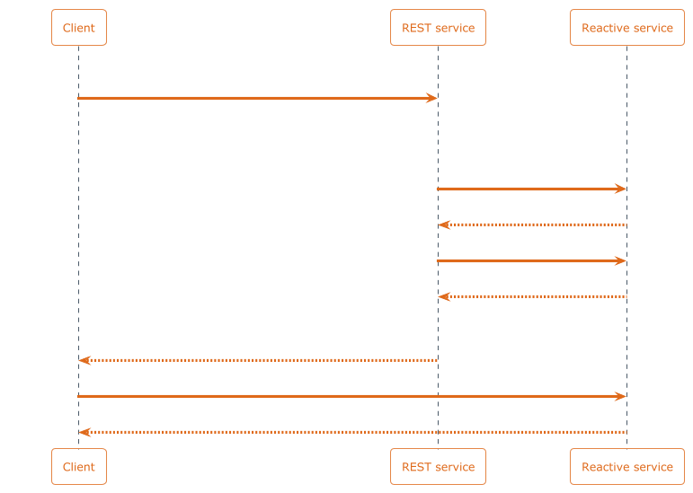

Reactive Services – Architecture
Table of Contents
1. Overview
This RFC aims to define an architecture for reactive services, along with their APIs.

A reactive service defines a compute graph made of skip runtime reactive collections, along with one or more reactive resources (analogous to REST resources), which are parameterized, dynamically generated, read-only, skip runtime reactive collections exposed to the outside world.
A reactive service is a back end component offering a low level API intended to be used by other back end components (such as regular REST services), rather than being directly exposed to the front end.
A reactive resources can be mirrored (through WebSocket) from by services as well as directly from clients.
Example:
A Twitter reactive service may expose the following reactive resources:
tweets(params:author_id),likes_per_tweet(params:tweet_id),likes_per_author(params:author_id).
In practice, it is implemented as follows:
TODO
A reactive service offers a minimal API to interact with reactive resources. This API is intended to be used by other back end components, such as a regular web frameworks1.
2. Mirroring Reactive Resources
In practice, a reactive resource is implemented by a TypeScript class responsible for dynamically generating a skip runtime reactive collection (using the provided parameters).
It is usually exposed through a separate REST service (implemented using any web framework), which orchestrates the instantiation of reactive resources.
Example2:

- A client sends a regular HTTP
GET /users/123/likesto the REST service. - The REST service handles the request:
- it invokes the reactive service's
create_reactive_request("likes_per_author", { author_id: 123 }), which returns a reactive request token (in practice, this is the name of a dynamically generated skip runtime collection), - it invokes the reactive service's
diff(reactive_request_id, 0), returning the current value along with the current tick, - it returns an HTTP 200 OK response, with the current value in the
response body, along with a special HTTP header:
X-Reactive-Request-Id: {reactive_request_id}:{init_tick}.
- it invokes the reactive service's
- The client uses the received data, and invokes the skip reactive
client's
mirror(reactive_request_id, init_tick, update_cb)to subscribe to subsequent updates3.
This means that an existing REST API can be kept as is, and made
reactive without hindering non-reactive clients (which would simply
ignore the X-Reactive-Request-Id HTTP response header), thus
permitting gradual introduction of reactivity in existing services.
3. The Write Path
Some of the skip runtime reactive collections defined by the reactive
service may be read-write input collections. On the write path,
the web framework simply invokes the reactive service's write() /
write_all() functions 4.
4. Low Level API
Reactive Services expose the following low level primitives (in
practice through a local server-side HTTP API, except for mirror()
which is handled through a WebSocket):
4.1. Reactive Resources
create_reactive_request(resource_name: string, params: Record<string, Object>, public_key: string): stringReturns a reactive request id (which is a dynamically generated collection name) that can be used with
mirror()to get reactive updates, or withread_all(req_id) / diff(req_id, prev_tick)to get current values.Mirroring the result is limited to the session identified by the
public_keyparameter.[WebSocket]
mirror(collection_name: string, init: (rows: Array<Object>): void, update: (added: Array<Object>, removed: Array<Object>): void)Mirrors the given collection, created using
create_reactive_request.
4.2. Reading
read(collection_name: string): Map<TKey, Array<Object>>Reads the whole collection at the current tick.
read_one(collection_name: string, key: TKey): Array<Object>Reads the value for a given key at the current tick.
diff(collection_name: string, prev_tick: int): (Map<TKey, Array<Object>>, int)Returns the diff between
prev_tickand the current tick, along with the current tick.
4.3. Writing
write_many(collection_name: string, value: Map<TKey, Array<Object>>)Sets the values for the given keys.
write_one(collection_name: string, key: TKey, value: Array<Object>)Sets the value for a given key.
5. Client
A downstream consumer of a reactive service will usually be using a thin client in their host language. That client deals only with mirroring reactive resources (cf. Mirroring Reactive Resources), and subscribing to updates.
6. Authentication
A pair of public/private keys is generated client-side in order to authenticate a session. The private key never leaves the client5.
The public key is sent to the replication server in the Auth
message, along with a signature of the Auth message, in order to
authenticate the mirroring session.
The Auth message contains a (client generated) nonce to prevent
replay attacks, and a timestamp to make tracking previously used
nonces more practical.
The replication server accepts any public key (as long as it matches the signature). By default, no data is mirrorable, except for the response tables generated for requests using that public key.
The create_reactive_request() function of the Low Level API takes a
public key as its last parameter. The generated response table can be
mirrored only by authenticating using the same public/private key
pair.
7. Full Example: HackerNews
7.1. Non-reactive initial project
SQL Schema:
1: CREATE TABLE IF NOT EXISTS users ( 2: "id" INTEGER PRIMARY KEY AUTOINCREMENT, 3: "name" TEXT, 4: "email" TEXT 5: ); 6: CREATE TABLE IF NOT EXISTS posts ( 7: "id" INTEGER PRIMARY KEY AUTOINCREMENT, 8: "author_id" INTEGER, 9: "title" TEXT, 10: "url" TEXT, 11: "body" TEXT 12: ); 13: CREATE TABLE IF NOT EXISTS upvotes ( 14: "id" INTEGER PRIMARY KEY AUTOINCREMENT, 15: "user_id" INTEGER, 16: "post_id" INTEGER 17: ); 18: 19: -- Fixtures 20: INSERT INTO posts("title", "url", "body") VALUES 21: ('Hello!', 'http://foo.org', 'This is a post'), 22: ('Reactive stuff', 'http://bar.net', 'This is neat.');
Back end:
1: from flask import Flask, g, json, request 2: import sqlite3 3: 4: DATABASE = 'database.db' 5: 6: 7: def get_db(): 8: db = getattr(g, '_database', None) 9: if db is None: 10: db = g._database = sqlite3.connect(DATABASE) 11: return db 12: 13: def init_db(): 14: with app.app_context(): 15: db = get_db() 16: with app.open_resource('schema.sql', mode='r') as f: 17: db.cursor().executescript(f.read()) 18: db.commit() 19: 20: 21: app = Flask(__name__) 22: 23: # Required for local testing. 24: from flask_cors import CORS 25: CORS(app) 26: 27: @app.teardown_appcontext 28: def close_connection(exception): 29: db = getattr(g, '_database', None) 30: if db is not None: 31: db.close() 32: 33: def format_post(post): 34: return { 35: "id": post[0], 36: "title": post[1], 37: "url": post[2], 38: "body": post[3], 39: "author": post[4], 40: "upvotes": post[5] 41: } 42: 43: @app.get("/") 44: def posts_index(): 45: db = get_db() 46: cur = db.execute( 47: """SELECT id, title, url, body, 48: (SELECT name FROM users WHERE id=posts.author_id LIMIT 1) as author, 49: (SELECT COUNT(id) FROM upvotes WHERE post_id=posts.id) as upvotes 50: FROM posts ORDER BY upvotes DESC""" 51: ) 52: res = [ 53: format_post(post) 54: for post in cur.fetchall() 55: ] 56: cur.close() 57: 58: return json.jsonify(res) 59: 60: @app.post("/posts") 61: def create_post(): 62: params = request.json 63: title = params['title'] 64: url = params['url'] 65: body = params['body'] 66: 67: db = get_db() 68: db.execute(f"INSERT INTO posts(title, url, body) VALUES('{title}', '{url}', '{body}')") 69: db.commit() 70: 71: return "ok", 200 72: 73: @app.get("/posts/<int:post_id>") 74: def get_post(post_id): 75: db = get_db() 76: 77: cur = db.execute(f"""SELECT id, title, url, body, 78: (SELECT name FROM users WHERE id=posts.author_id LIMIT 1) as author, 79: (SELECT COUNT(id) FROM upvotes WHERE post_id=posts.id) as upvotes 80: FROM posts WHERE id={post_id}""") 81: res = format_post(cur.fetchone()) 82: cur.close() 83: 84: return json.jsonify(res) 85: 86: @app.post("/posts/<int:post_id>/upvotes") 87: def upvote_post(post_id): 88: db = get_db() 89: db.execute(f"INSERT INTO upvotes(post_id) VALUES({post_id})") 90: db.commit() 91: 92: return "ok", 200
Front end:
1: import { useState, useEffect } from 'react' 2: import { 3: BrowserRouter as Router, 4: Routes, 5: Route, 6: Link, 7: useParams 8: } from "react-router-dom"; 9: import './App.css' 10: 11: const BASE_URL = "http://localhost:5000" 12: 13: export default function App() { 14: return ( 15: <Router> 16: <div> 17: <Routes> 18: <Route path="/" Component={Feed} /> 19: <Route path="/posts/:post_id" Component={Post} /> 20: </Routes> 21: </div> 22: </Router> 23: ); 24: } 25: 26: function Feed() { 27: const [posts, setPosts] = useState([]) 28: 29: async function getPosts() { 30: try { 31: const response = await fetch(BASE_URL); 32: const data = await response.json(); 33: return data; 34: } catch (error) { 35: console.error(error); 36: } 37: } 38: 39: async function upvotePost(postId) { 40: try { 41: await fetch(`${BASE_URL}/posts/${postId}/upvotes`, { method: "POST" }); 42: getPosts().then(setPosts); 43: } catch (error) { 44: console.error(error) 45: } 46: } 47: 48: useEffect(() => { 49: const intervalId = setInterval(() => { 50: getPosts().then(setPosts); 51: }, 1000); 52: 53: return () => clearInterval(intervalId); 54: }, []); 55: 56: return ( 57: <> 58: <h1>HackerNews example</h1> 59: <ul> 60: {posts.map(post => 61: <li key={post.id}> 62: <div className="votearrow" title="upvote" onClick={() => upvotePost(post.id)}></div> 63: <Link to={`/posts/${post.id}`}>{post.title}</Link> 64: <a href={post.url}>({post.url})</a><br /> 65: {post.upvotes} points 66: </li> 67: )} 68: </ul> 69: </> 70: ) 71: } 72: 73: function Post() { 74: const post_id = useParams().post_id; 75: const [post, setPost] = useState(null); 76: 77: async function getPost(postId) { 78: try { 79: const response = await fetch(`${BASE_URL}/posts/${postId}`); 80: console.log(response); 81: const data = await response.json(); 82: console.log(data); 83: return data; 84: } catch (error) { 85: console.error(error) 86: } 87: } 88: 89: useEffect(() => { 90: const intervalId = setInterval(() => { 91: getPost(post_id).then(setPost); 92: }, 1000); 93: 94: return () => clearInterval(intervalId); 95: }, []); 96: 97: return ( 98: <> 99: <h1>HackerNews example</h1> 100: {post && 101: <> 102: <h2>{post.title}</h2> 103: <p>{post.body}</p> 104: </>} 105: </> 106: ); 107: }
7.2. Making it reactive
Reactive Service:
1: import type { 2: SKStore, 3: TJSON, 4: Mapper, 5: EagerCollection, 6: NonEmptyIterator, 7: SimpleSkipService, 8: Resource, 9: } from "skip-runtime"; 10: 11: import { runWithRESTServer } from "skip-runtime"; 12: 13: class HackerNewsService implements SimpleSkipService { 14: private inputTables = ["posts", "users", "upvotes"], 15: private resources = [PostsResource] 16: 17: reactiveCompute( 18: store: SKStore, 19: inputCollections: Record<string, EagerCollection<string, TJSON>>, 20: ): Record<string, EagerCollection<TJSON, TJSON>> { 21: const upvotes = inputCollections.upvotes.map(UpvotesMapper); 22: const postsWithUpvotes = inputCollections.posts.map(PostsMapper, inputCollections.users, upvotes); 23: 24: return { 25: postsWithUpvotes 26: } 27: } 28: } 29: 30: class UpvotesMapper implements Mapper<string, TJSON, string, TJSON> { 31: mapElement(key: string, it: NonEmptyIterator<TJSON>): Iterable<[string, TJSON]> { 32: const value = it.first().post_id; 33: return [[value, key]] 34: } 35: } 36: 37: class PostsMapper implements Mapper<string, TJSON, TJSON, TJSON> { 38: constructor( 39: private users: EagerColelction<string, TJSON>, 40: private upvotes: EagerCollection<string, TJSON> 41: ) {} 42: 43: mapElement(key: string, it: NonEmptyIterator<TJSON>): Iterable<[[number, string], TJSON]> { 44: const post = it.first(); 45: const upvotes = this.upvotes.getArray(key).length; 46: const author = this.users.getOne(post.author_id); 47: return [[[-upvotes, key], { ...post, upvotes, author }]] 48: } 49: } 50: 51: class PostsCleanupKeyMapper implements Mapper<TJSON, TJSON, string, TJSON> { 52: mapElement(key: [number, string], it: NonEmptyIterator<TJSON>): Iterable<[string, TJSON]> { 53: const post = it.first(); 54: return [[key[1], post]]; 55: } 56: } 57: 58: class PostsResource implements Resource { 59: constructor(private limit: number) {} 60: 61: reactiveCompute( 62: store: SKStore, 63: collections: Record<string, EagerCollection<TJSON, TJSON>> 64: ): EagerCollection<string, TJSON> { 65: return collections.postWithUpvotes.take(this.limit).map(PostsCleanupKeyMapper); 66: } 67: } 68: 69: // Spawn a local HTTP server to support reading/writing and creating 70: // reactive requests. 71: runWithRESTServer(new HackerNewsService());
Modified back end:
1: from flask import Flask, g, json, request 2: import sqlite3 3: import requests 4: 5: REACTIVE_SERVICE_URL = 'http://localhost:3587/v1' 6: 7: DATABASE = 'database.db' 8: 9: 10: def get_db(): 11: db = getattr(g, '_database', None) 12: if db is None: 13: db = g._database = sqlite3.connect(DATABASE) 14: return db 15: 16: def init_db(): 17: with app.app_context(): 18: db = get_db() 19: with app.open_resource('schema.sql', mode='r') as f: 20: db.cursor().executescript(f.read()) 21: db.commit() 22: 23: 24: app = Flask(__name__) 25: 26: # Required for local testing. 27: from flask_cors import CORS 28: CORS(app) 29: 30: @app.teardown_appcontext 31: def close_connection(exception): 32: db = getattr(g, '_database', None) 33: if db is not None: 34: db.close() 35: 36: def format_post(post): 37: return { 38: "id": post[0], 39: "title": post[1], 40: "url": post[2], 41: "body": post[3], 42: "author": post[4], 43: "upvotes": post[5] 44: } 45: 46: @app.get("/") 47: def posts_index(): 48: public_key = request.headers['X-Reactive-Auth'] 49: 50: if public_key: 51: # Create reactive request for the reactive resource `posts`, 52: # limited to 10 results. 53: reactive_request_id = requests.post( 54: REACTIVE_SERVICE_URL + f'/reactive/posts', 55: params = { 56: 'limit': 10 57: }, 58: headers = { 59: 'X-Reactive-Auth': public_key, 60: } 61: ).content 62: 63: # Get the initial data, which will be returned to the client 64: # along with a reactive request token for subscribing to 65: # further updates. 66: diff = requests.get(REACTIVE_SERVICE_URL + 67: f'/collections/{reactive_request_id}/diff/0').json() 68: 69: tick = diff['tick'] 70: return diff['data'], { 'X-Reactive-Request-Id': f'{reactive_request_id}:{tick}' } 71: 72: else: 73: # If the client didn't set the `X-Reactive-Auth` header, they 74: # are not interested in reactive updates for this query, so we 75: # just respond with the current values. 76: posts = requests.get(f'/collections/{reactive_request_id}').json() 77: 78: return json.jsonify(res) 79: 80: @app.post("/posts") 81: def create_post(): 82: params = request.json 83: title = params['title'] 84: url = params['url'] 85: body = params['body'] 86: 87: db = get_db() 88: cur = db.cursor() 89: cur.execute(f"INSERT INTO posts(title, url, body) VALUES('{title}', '{url}', '{body}')") 90: post_id = cur.lastrowid 91: db.commit() 92: 93: # Write into the reactive input collection. 94: requests.post( 95: REACTIVE_SERVICE_URL + f'/posts', 96: params = { **params, 'id': post_id } 97: ) 98: 99: return "ok", 200 100: 101: @app.get("/posts/<int:post_id>") 102: def get_post(post_id): 103: db = get_db() 104: 105: cur = db.execute(f"""SELECT id, title, url, body, 106: (SELECT name FROM users WHERE id=posts.author_id LIMIT 1) as author, 107: (SELECT COUNT(id) FROM upvotes WHERE post_id=posts.id) as upvotes 108: FROM posts WHERE id={post_id}""") 109: res = format_post(cur.fetchone()) 110: cur.close() 111: 112: return json.jsonify(res) 113: 114: @app.post("/posts/<int:post_id>/upvotes") 115: def upvote_post(post_id): 116: user_id = get_current_user().id 117: 118: db = get_db() 119: cur = db.cursor() 120: cur.execute(f"INSERT INTO upvotes(post_id, user_id) VALUES({post_id}, {user_id})") 121: upvote_id = cur.lastrowid 122: db.commit() 123: 124: # Write into the reactive input collection. 125: requests.post( 126: REACTIVE_SERVICE_URL + f'/upvotes', 127: params = { 128: 'id': upvote_id, 129: 'post_id': post_id, 130: 'user_id': user_id, 131: } 132: ) 133: 134: return "ok", 200
Diff:
exec 2>&1
diff -u ../examples/hackernews/back-end/app{,_reactive}.py
--- ../examples/hackernews/back-end/app.py 2024-09-19 15:44:44.769194526 +0200 +++ ../examples/hackernews/back-end/app_reactive.py 2024-09-19 15:44:29.800371988 +0200 @@ -1,5 +1,8 @@ from flask import Flask, g, json, request import sqlite3 +import requests + +REACTIVE_SERVICE_URL = 'http://localhost:3587/v1' DATABASE = 'database.db' @@ -42,18 +45,35 @@ @app.get("/") def posts_index(): - db = get_db() - cur = db.execute( - """SELECT id, title, url, body, - (SELECT name FROM users WHERE id=posts.author_id LIMIT 1) as author, - (SELECT COUNT(id) FROM upvotes WHERE post_id=posts.id) as upvotes - FROM posts ORDER BY upvotes DESC""" - ) - res = [ - format_post(post) - for post in cur.fetchall() - ] - cur.close() + public_key = request.headers['X-Reactive-Auth'] + + if public_key: + # Create reactive request for the reactive resource `posts`, + # limited to 10 results. + reactive_request_id = requests.post( + REACTIVE_SERVICE_URL + f'/reactive/posts', + params = { + 'limit': 10 + }, + headers = { + 'X-Reactive-Auth': public_key, + } + ).content + + # Get the initial data, which will be returned to the client + # along with a reactive request token for subscribing to + # further updates. + diff = requests.get(REACTIVE_SERVICE_URL + + f'/collections/{reactive_request_id}/diff/0').json() + + tick = diff['tick'] + return diff['data'], { 'X-Reactive-Request-Id': f'{reactive_request_id}:{tick}' } + + else: + # If the client didn't set the `X-Reactive-Auth` header, they + # are not interested in reactive updates for this query, so we + # just respond with the current values. + posts = requests.get(f'/collections/{reactive_request_id}').json() return json.jsonify(res) @@ -65,9 +85,17 @@ body = params['body'] db = get_db() - db.execute(f"INSERT INTO posts(title, url, body) VALUES('{title}', '{url}', '{body}')") + cur = db.cursor() + cur.execute(f"INSERT INTO posts(title, url, body) VALUES('{title}', '{url}', '{body}')") + post_id = cur.lastrowid db.commit() + # Write into the reactive input collection. + requests.post( + REACTIVE_SERVICE_URL + f'/posts', + params = { **params, 'id': post_id } + ) + return "ok", 200 @app.get("/posts/<int:post_id>") @@ -85,8 +113,22 @@ @app.post("/posts/<int:post_id>/upvotes") def upvote_post(post_id): + user_id = get_current_user().id + db = get_db() - db.execute(f"INSERT INTO upvotes(post_id) VALUES({post_id})") + cur = db.cursor() + cur.execute(f"INSERT INTO upvotes(post_id, user_id) VALUES({post_id}, {user_id})") + upvote_id = cur.lastrowid db.commit() + # Write into the reactive input collection. + requests.post( + REACTIVE_SERVICE_URL + f'/upvotes', + params = { + 'id': upvote_id, + 'post_id': post_id, + 'user_id': user_id, + } + ) + return "ok", 200
Footnotes:
In other words, a reactive service does not deal with the
HTTP request/response cycle, but is instead invoked by a REST service
(for instance implemented using Flask, node.js, or Ruby on
Rails). This differs from the previous design where the reactive
service owned the HTTP request/response cycle, delegating to user
code by invoking the update() callback. That design had the downside
of making it difficult to leverage existing web frameworks for the
REST part.
This is just one possible way to use a reactive service. Developers may instead decide to create a reactive request only when explicitly requested. They may also choose not to respond with initial data, relying on mirroring for the entire sync.
The exact API of mirror regarding init data is still TBD.
Writing to a reactive service input collection isn't a substitute for writing into a regular database (such as PostgreSQL). In most cases, the write into the reactive service will happen after an actual write to a regular database.
This differs from the previous design where a shared private key was generated server-side and communicated to the client through a side-channel.